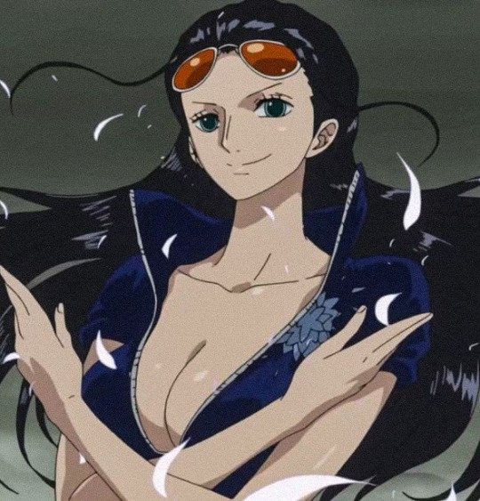

Thong tin ve One Piece

Nico Robin
Trong One Piece, Nico Robin (được biết đến với biệt danh "Đứa con của Quỷ") là nhà khảo cổ của băng hải tặc Mũ Rơm đến từ Biển Tây. Khi còn là một đứa bé, Robin đã bị truy nã với số tiền 79.000.000 Berry nhờ khả năng có thể đọc được các phiến đá cổ đại Poneglyphs. Cô đã thoát chết khỏi cuộc tàn sát tại đảo Ohara nhiều năm trước và từ đó cuộc sống của Robin luôn là chạy trốn và tự bảo vệ bản thân mình.

Robin đă ăn trái ác quỷ hệ Paramecia tên là Hana Hana no Mi khi còn rất trẻ và được thấy đã sử dụng sức mạnh của nó khi 8 tuổi. Cô có thể tạo ra một phần cơ thể trên bất cứ bề mặt nào kể cả cơ thể của cô, cơ thể người khác, và các vật thể khác, cho phép cô tạo ra bản sao của chúng.
Thông Tin Cơ Bản
Tên tiếng Nhật: ニコ・ロビン - Tên tiếng La Tinh: Niko Robin - Tên tiếng Anh: Nico Robin - Sinh nhật: 6/2 - Tuổi: 28 (lần đầu xuất hiện); 30 (sau timeskip) - Chiều cao: 188 cm - Xuất hiện: Manga chương 114, anime tập 67 - Tổ chức: Băng Mũ Rơm, Baroque Works (trước đây); thị tộc Oharan (trước đây), Quân Cách mạng (trước đây) - Thân phận: Hải tặc, Nhà Khảo cổ học - Biệt danh: Đứa con của Quỷ, Light of the Revolution - Tiền thưởng: 130,000,000 belly - Trái ác quỷ hệ Paramecia: Tên tiếng Nhật Hana Hana no Mi, tên tiếng Anh Hana-Hana Fruit / Flower-Flower Fruit, tên tiếng Việt: Trái Hoa - Lồng tiếng: Nhật: Yuriko Yamaguchi (tập 67–298, 320+), Yuko Kobayashi (299–319), Anzu Nagai (lúc trẻ) Anh:Natasha Malinsky, Veronica Taylor, Stephanie Young, Jad Saxton (lúc trẻ)
TNgoại hình:

Nico Robin có dáng người cao cao, mảnh khảnh, mái tóc đen dài chấm. Trong manga, cô được miêu tả là có đôi mắt màu nâu với đồng tử rộng. Trong anime, Robin lại có đôi mắt màu xanh (ngoại trừ movie thứ 9 và thứ 10). Robin cũng có chiếc mũi thẳng và nhỏ. Trong anime, màu da của Robin cũng tối hơn trong manga.
Robin khá giống mẹ, ngoại trừ màu tóc và kiểu tóc cũng như màu da. Robin cũng được miêu tả là có "chân tay dài miên man", điều này là một lợi thế lớn cho khả năng chiến đấu của cô.
Sau 2 năm: Cô ăn mặc mát mẻ hơn trước, da cũng trắng lên rõ rệt và mái tóc hơi xoăn chứ không còn thẳng như xưa. Cô thường đeo mắt kính màu cam, mặc váy và áo hở ngực.

Tính cách và sở thích:

Robin có niềm đam mê lớn với lịch sử và là một nhà khảo cổ xuất sắc với sự hiểu biết sâu rộng về lịch sử và văn hóa. Cô cũng là người duy nhất còn sống có thể đọc được ngôn ngữ được khắc trên các phiến đá Poneglyph, thứ chứa bản ghi chép về lịch sử cổ đại.
Robin cũng sở hữu kiến thức đáng kể về hầu hết các nhân vật lớn trong thế giới One Piece. Cô thậm chí biết cả những tổ chức bí mật nhất như các Cipher Pol khác nhau của Chính phủ Thế giới; như CP9 và CP0.
Trong băng Mũ Rơm, Robin là người ít "tưng tửng" nhất nhóm. Cô rất điềm tĩnh, kín đáo, hiếm khi bộc lộ cảm xúc hay phản ứng một cách thái quá. Robin được đánh giá là một người phụ nữ mạnh mẽ, chân thành và giàu cảm xúc.
Và bây giờ, mời các bạn cùng chiêm ngưỡng dung mạo xinh đẹp của nữ khảo cổ băng Mũ Rơm nhé!